Role
Product Designer, End-to-End
AutoDoc needed documents to process. OmnisProof needed documents to sign. MedChron needed a way to attach one without leaving its own screen. None of them agreed on where a file actually lived — so I designed the one layer all three now call into directly, not just link out to.
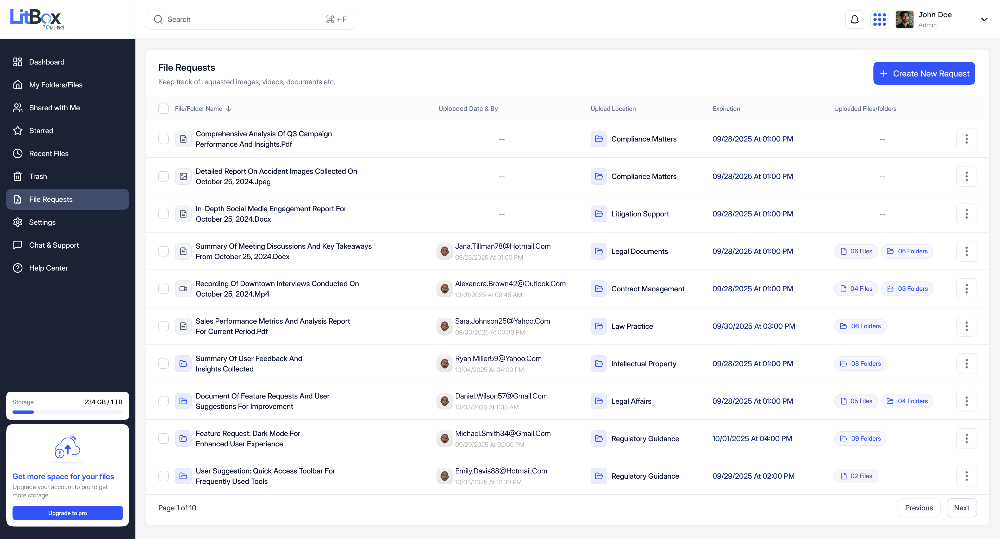
LitBox is the secure file management layer inside Omnis AI's legal tech platform — one place for a firm's documents, evidence, and case media that the rest of the ecosystem is designed to read from and write to, instead of each product holding its own disconnected copy.
On the surface it looks like the category it has to compete with: a Drive- or Dropbox-style workspace with folders, previews, sharing, and search. The difference is what sits underneath. Every file in LitBox can carry a matter context, a permission model built for firm/team/client boundaries rather than personal accounts, and an audit trail — and, unlike a general-purpose drive, it was designed from day one to be a layer other products plug into, not an island.
Omnis AI already ships several purpose-built legal tools — CasePro (case and matter management), AutoDoc (document intelligence and processing), OmnisProof (e-signature), plus MedChron, LitDraft, CaseNotes, and DiscoPro. Every one of them touches files. Before LitBox, storage wasn't a first-party layer any of them shared — it lived wherever each product's team decided to put it, or outside the ecosystem entirely in whatever drive a firm already used.
A legal tech company adding "cloud storage" to its roadmap is an easy pitch to over-sell. So before treating it as obviously worth building, I separated what's actually documented from what's a reasonable-but-unproven hypothesis.
Confirmed: AutoDoc's Documents-folder pickup and the in-document "Continue to e-signature" action are both built and working today. Not yet measured: how much time firms actually lose bouncing files between tools — no baseline exists yet, and I'm not inventing one.
This section draws on secondary research — published security and legal-tech sources — not on primary interviews I personally ran with lawyers. I want to be explicit about that distinction up front, because the rest of the case study depends on it.
In the interest of not overstating what this research package actually is:
A generic drive protects files. A law firm's drive has to protect privilege — client identities, litigation strategy, medical and financial records, and communications that are confidential by professional obligation, not just by preference. That distinction is what "secure storage" has to mean for LitBox, and it's worth grounding in real incidents rather than abstract risk language.
These five cases were supplied to me as potential evidence. I verified each one rather than taking the dates and framing at face value — and in every single case, the date I was given turned out to be when a lawsuit was filed or a settlement was approved, not when the breach itself happened. That gap is worth sitting with on its own: notification and litigation timelines routinely run months to years behind the actual incident.
Breach: May 2026, not July 2026. An attacker posed as the firm's IT department and social-engineered an attorney into uploading files to an external Google Drive account. 57,554 individuals affected — SSNs, financial, and medical data. Two proposed class actions (Delapaz and Santana v. Blank Rome) were filed July 6, 2026 in E.D. Pa. — still pending.
Breach: March 2023, not November 2024 — hackers had network access for roughly two weeks. 638,000+ individuals affected, including clients of healthcare-sector entities. The $8M settlement (up to $2,500–$7,500 per claimant) received final approval in November 2024 — that's the date that was actually supplied to me.
Breach: May 2026, not July 2026 — names and SSNs accessed by an unauthorized third party. WilmerHale states the attacker didn't directly access its systems and found no evidence of misuse. Perry v. WilmerHale was filed July 2026 in D.D.C. — still pending, not yet a confirmed settlement.
Breach: April 2025, not November 2025 — a social-engineering attack over a short window. Notification began November 2025, seven months later. Important correction: the proposed class action was not settled — three plaintiffs voluntarily dismissed their suit in S.D.N.Y. after a mediation attempt. I'm not treating this as a firm "loss" to cite.
Breach: November 2022, not November 2024 — suit filed May 2024, ~746,000 individuals affected. The $8.5M settlement received final court approval in August 2025, not November 2024. Numbers were right; nearly every date needed correcting.
Two provisions of the ABA Model Rules of Professional Conduct (adopted state-by-state, not federal law) are the actual ethical floor here. Rule 1.6(c), added in 2012, requires a lawyer to "make reasonable efforts to prevent the inadvertent or unauthorized disclosure of, or unauthorized access to, information relating to the representation of a client." Comment 8 to Rule 1.1 (competence), added the same year, requires a lawyer to "keep abreast of changes in the law and its practice, including the benefits and risks associated with relevant technology" — source: American Bar Association ↗. Most U.S. states have since adopted Comment 8 or an equivalent duty. Neither provision mandates a specific technology or certification — they require reasonable safeguards and informed decisions, which is a lower and more contextual bar than "encrypted" or "compliant," and exactly why I'm not attaching either of those words to LitBox without something to back them up.
Drawing on Clio's and Sync's own published security guidance (both are legal-software vendors describing their own practices, so I'm treating this as informative rather than independent research) plus CloudLex's incident-pattern write-ups: the baseline components are encryption in transit and at rest, multi-factor authentication, role-based access control, session management, audit logging, and a clear distinction between consumer-grade tools and ones built for legal-grade access control. Sync's own material is blunt about this gap: general-purpose consumer cloud tools are "designed for a broad audience" and often lack the audit trails and access controls firms specifically need. On vendor selection itself, CloudLex's piece on data-privacy certification makes the case that a vendor's own certifications matter when a firm is choosing who to trust with client data — a standard LitBox doesn't yet meet, per the note below.
Google Drive, Dropbox, and Box are mature, well-engineered products used by millions of people, including plenty of law firms. The honest question isn't "are they secure" — it's "do they model the thing a law firm actually organizes around: a matter, not a folder."
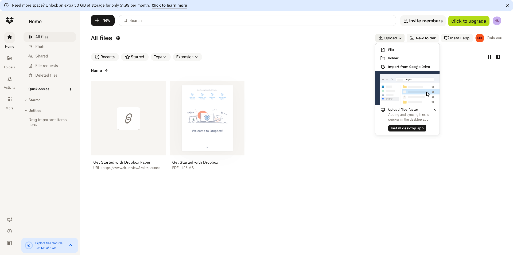
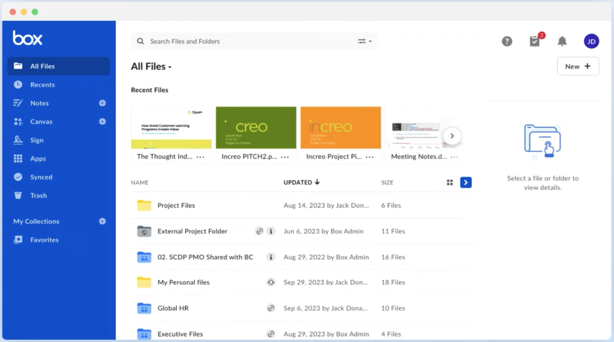
Once "every product needs files and none of them own storage" was clear (Section 02), the fix wasn't obvious yet — it rarely is. These are the three real architectural paths I weighed, not a polished single recommendation dressed up after the fact.
Rejected — doesn't fix fragmentation, it just re-skins it. Every product still holds its own copy of a file, with no shared audit trail connecting them.
Rejected — ties every other product's file access to CasePro's release cycle and permission model. MedChron and LitDraft would still need their own workarounds to reach a file.
Chosen — the only option where AutoDoc, OmnisProof, MedChron, and LitDraft can each connect on their own timeline, without depending on each other or on CasePro shipping first.
Law firms working inside the Omnis AI ecosystem have no shared, secure place to store case files — so every product either builds its own storage or depends on a general-purpose drive that has no concept of a legal matter, a case team, or an audit trail.
A file layer purpose-built for legal matters — with familiar Drive-like interaction patterns — can become the shared foundation the rest of the ecosystem reads from and writes to, instead of each product solving storage on its own.
The core file-management surface should feel like Drive or Dropbox on first use — the legal-specific value should layer on top, not force a new mental model for basic file handling.
Upload, download, share, permission change, restore, delete — the Audit Timeline exists so nothing sensitive happens invisibly.
A file uploaded to LitBox should be reachable from the products that need it — starting with AutoDoc and OmnisProof — instead of requiring a re-upload for every downstream tool.
Not every persona needs the same surface — that shaped the IA more than any single feature request did.
The internal-beta scope covers the core file-management loop end to end — upload, organize, preview, share, request, restore/delete, search, and audit — plus the confirmed ecosystem connections: AutoDoc via File Requests, OmnisProof via in-document e-signature, and embedded search live inside MedChron and AutoDoc itself (Section 12). A conversational AI assistant, deeper CasePro matter-linking, and broader third-party integrations are explicitly out of MVP scope; see Section 10 for what that AI question actually looks like.
The scenario below is an illustrative, research-informed composite — not a transcript of an observed user. I'm marking it that way deliberately, because the difference between "this is what I watched happen" and "this is a representative pattern the research supports" matters.
The navigation below is what's actually built, not a wishlist — it maps directly onto the left sidebar in the shipped screens throughout this case study.
Uploading into a File Request, end to end. A paralegal opens File Requests → Create New Request, sets a title, a destination folder, an optional deadline and password, and shares it with an external email. The recipient never needs a LitBox account — they land on a scoped upload page. Once submitted, the files route straight into the destination folder, and if that folder is AutoDoc-connected, processing starts without anyone re-uploading anything.
Content search across a matter. Typing into global search surfaces results scoped to Files/Documents, Folders, or Content — the Content tab searches inside text AutoDoc has already extracted, showing the source file, the specific page, and a highlighted snippet, so a user can judge relevance before opening anything.
Most of a file-management product's design work isn't the happy path — it's what a grid looks like with zero files in it, what happens when someone opens a folder they don't have permission for, and what a delete confirmation says when the action can't be undone after a set window. LitBox's Figma file has more than two dozen empty, error, and permission states designed up front, across core file management, sharing, search, audit, and admin — that scope shaped the workspace as much as the dashboard did.
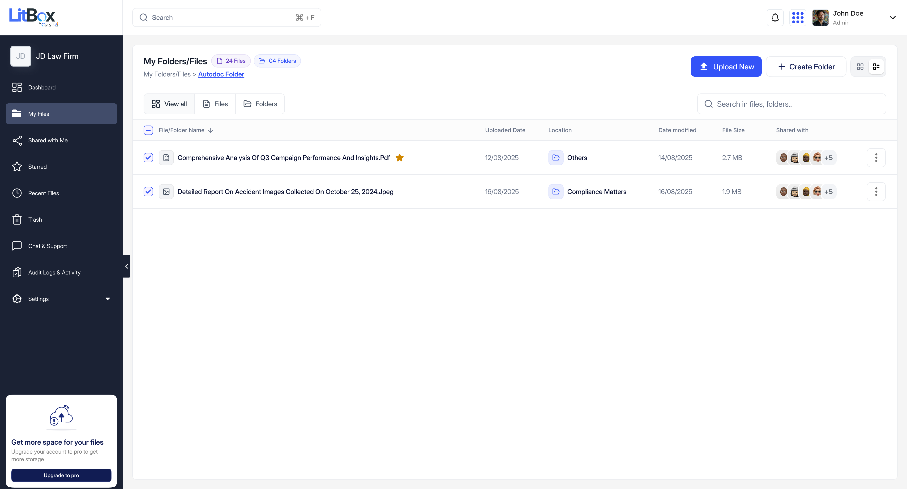
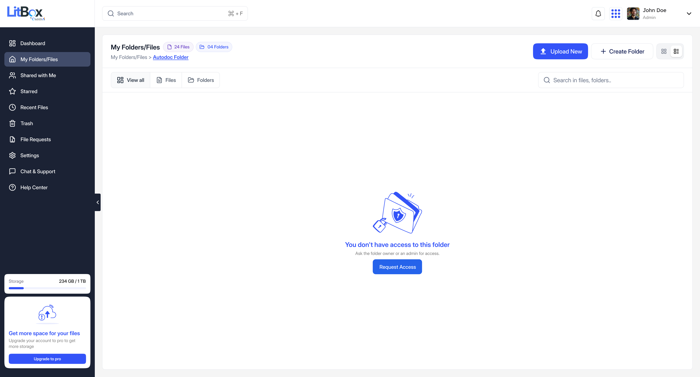
Upload favors clarity over cleverness. Restore stays quiet — reversible, one click. Delete inside the retention window costs a second's friction on purpose, so nothing sensitive disappears silently.
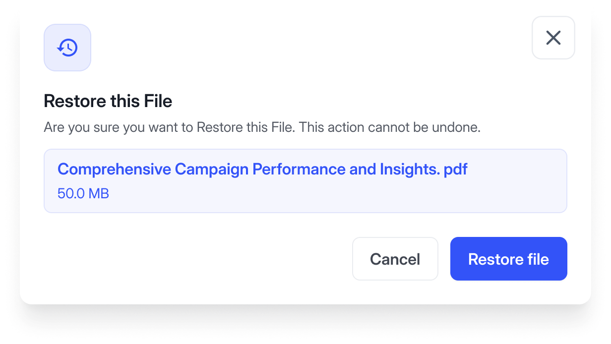
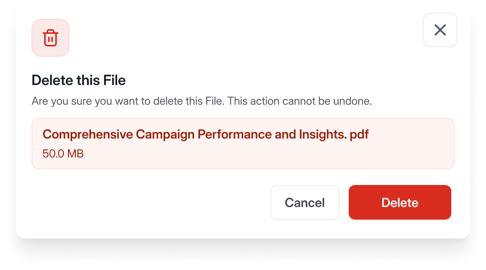
Every upload, download, share, rename, permission change, and restore is written to a single timeline, filterable by action type, with the file, the user and role, and a timestamp on every row. This is the one piece of Section 03's security discussion that isn't a proposed capability — it's built, and it's the concrete answer to "how would a firm know who touched a file."
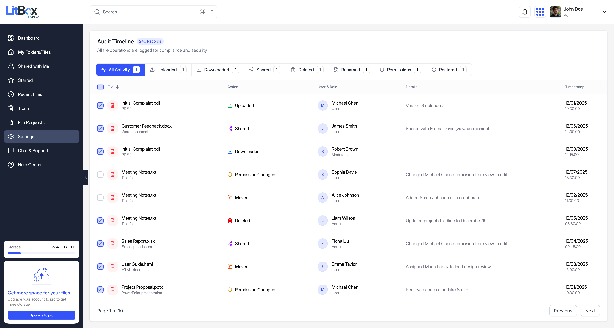
Storage Management is a separate surface for firm admins — total usage, storage by file type, per-user breakdowns, and quota alerts — rather than a setting buried inside the same view every attorney and paralegal sees. Keeping it separate meant the day-to-day file workspace never had to compromise its simplicity to accommodate governance features most users will never open.
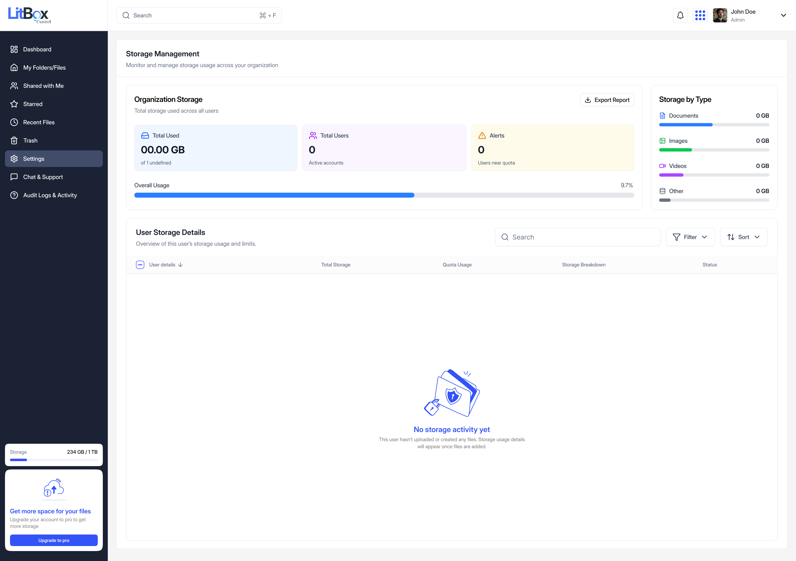
Two different things live in this section, and I want to keep them clearly separate: content search across AutoDoc-processed documents is designed and functioning in the prototype today. A conversational AI assistant is a direction worth exploring — and explicitly not something LitBox has built.
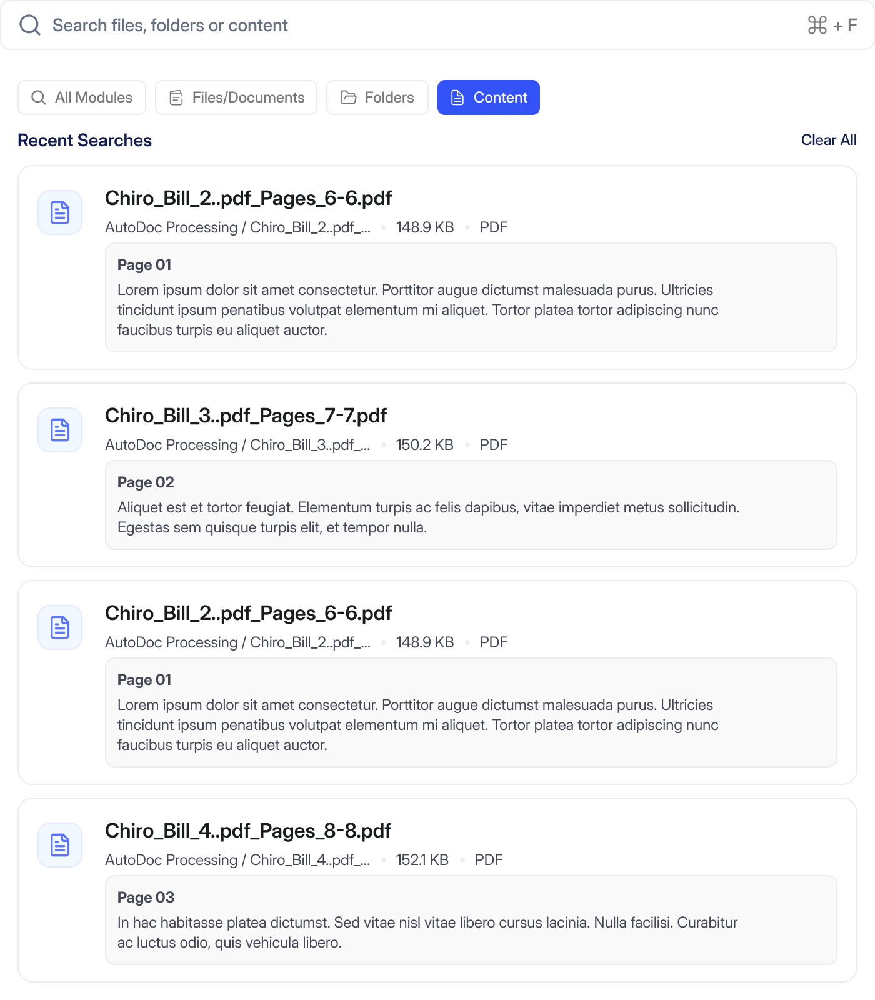
"Search inside documents" sounds like a checkbox feature until you consider what it actually required: LitBox's search only works this way because AutoDoc had already extracted text from the file. Search got meaningfully better specifically because LitBox and AutoDoc share a file — not because of anything search-specific LitBox built on its own. Section 12 shows what that sharing looks like from the other direction.
The module-architecture research behind LitBox sketches use cases like "find all medical records related to this matter" or "summarize these documents" — a conversational layer on top of content search. None of that is built. I'm including the thinking because the design considerations are real even before the feature is: any answer would need a source citation back to the exact file and page it came from, retrieval would need to respect the same permission model as manual search, and it would sit on top of the existing search index rather than replace it — search stays the fallback a user trusts when they want to see everything themselves.
This section is about LitBox handing files off to the rest of the platform — Section 12 covers the opposite direction, LitBox's own interface running inside other products. Two integrations here are built and working in the current prototype, not proposed on a roadmap slide: File Requests feeding AutoDoc, and e-signature launched directly from a document. Both are shown below exactly as designed.
A File Request isn't just "share a link and wait." It has a title, a description, a destination folder, an optional deadline, password protection, and a defined recipient — and when that destination folder is an AutoDoc-connected folder, submitted files are positioned to be picked up for processing without anyone manually forwarding them.
Opening a document that needs a signature surfaces a "Continue to e-signature" action that hands off directly into OmnisProof's signer setup — general info, signer list, extra fields, and distribution — without exporting the file and re-uploading it into a separate tool.
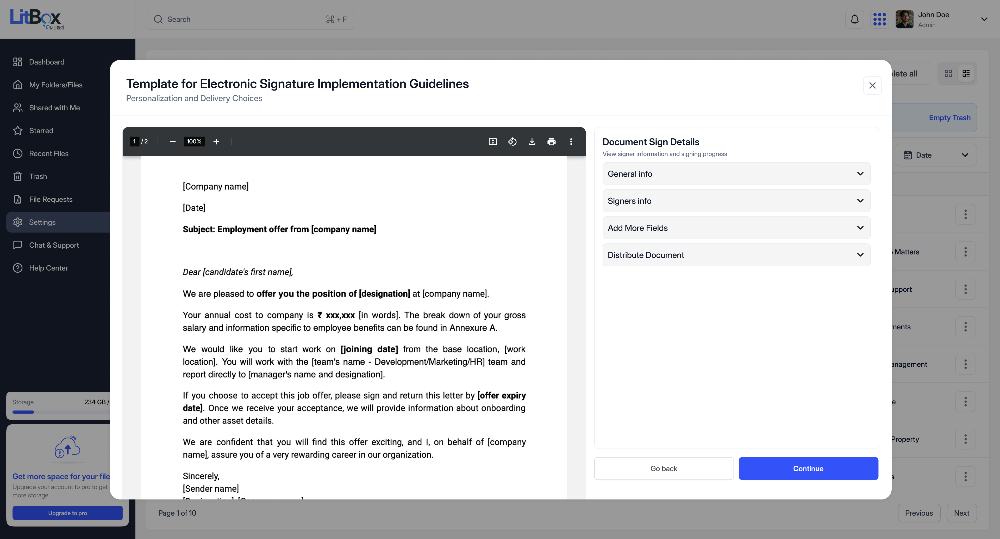
Still proposed, not implemented: CasePro matter-linking and a shared permission model spanning the whole ecosystem. MedChron and LitDraft, it turns out, are further along than that — see the next section.
Search doesn't have to mean leaving the tool you're already in — that was the design brief in so many words, down to the internal Figma section literally named "avoid context switching." LitBox's search is embedded directly inside other Omnis AI products, and what follows are staging screenshots of the real thing, not mockups.
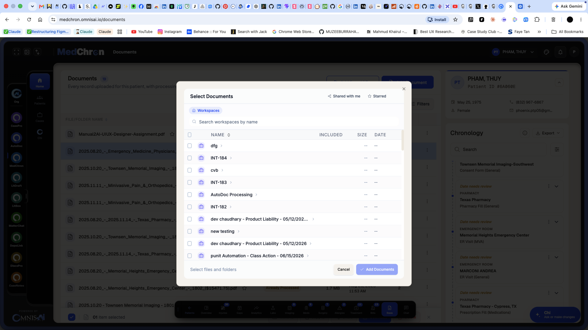
"Lawyers will switch because LitBox is more secure" isn't a defensible claim — Drive, Dropbox, and Box are all reasonably secure products. The actual case for LitBox has to rest on something more specific.
The defensible pitch isn't "more secure" — it's "the file layer that gets more useful the more of Omnis AI you already use." That's a narrower claim, and it's one the File Requests → AutoDoc and in-document e-signature flows can actually back up today.
None yet. LitBox is in internal beta with no usage baseline to report — I'm not going to invent adoption numbers or time-savings percentages to make this section look stronger.
AutoDoc and OmnisProof integrations work end to end in the prototype, and staging screenshots confirm search is already live inside MedChron and AutoDoc. A structured UI-QA pass produced concrete, actionable fixes I designed against — real iteration, even without formal usability-test data.
Reduced re-uploading across AutoDoc/OmnisProof workflows, a defensible audit trail for firms handling sensitive files, and fewer uncontrolled public links — all hypotheses to validate once real usage exists, not claims to make today.
I owned LitBox's product design end to end: the competitive and module-architecture research that scoped what "parity with Dropbox and Box" actually required, the information architecture, the full UI system across file management, sharing, search, audit, and admin, and the design of its live ecosystem connections into AutoDoc, OmnisProof, MedChron, and LitDraft. The empty-state, error-state, and permission-state documentation — more than two dozen scenarios specified before a single one shipped — was mine to define, not a gap engineering had to fill in later.